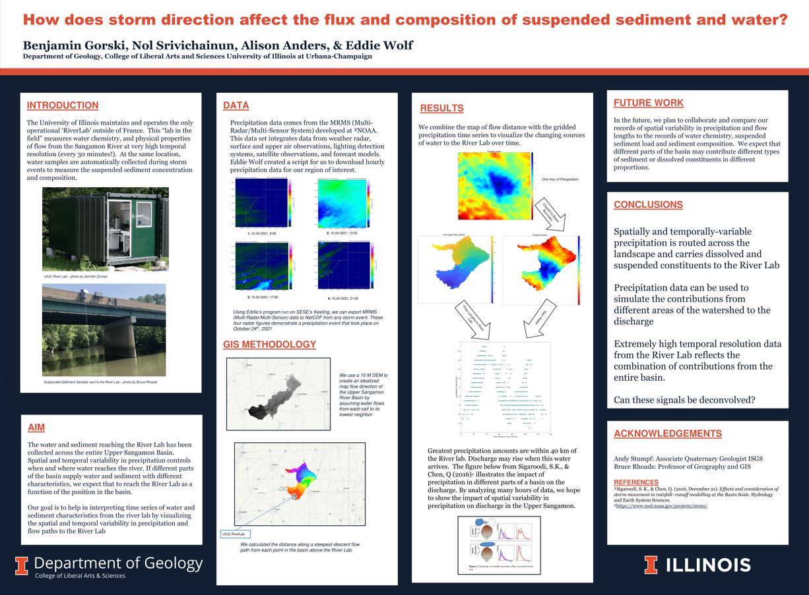

Research Projects

UIUC RiverLab
Middle Fork Vermilion River
Senior Thesis
Middle Fork Vermilion River
I assisted Dr. Alison Anders with the the MFVR research project from September 2022 to December 2023, which focused on compareing post-settlement alluvium (PSA), unit stream power, and the rate of meander migration to the neighboring Sangamon River. This project was apart of a broader initiative funded by the NSF to investigate how rivers that developed during the Holocene epoch (the formerly glaciated Midwest) respond to land use change. Our group researched post-settlement alluvium by hand augering core samples near the MFVR and determining magnetic fly ash concentrations. Because it originates from the combustion of coal, fly ash serves as a reliable stratigraphic marker to distinguish between pre-settlement and post-settlement alluvium.
Because magnetic fly ash concentration is inversely correlated to flood plain width, we used a topographic releif map to find reasonable coring locations.
Pictured: M.S Nol Srivichainun and my research advisor Dr. Alison Anders
The University of Illinois Urbana-Champaign maintains and operates the only ‘RiverLab’ outside of France. This “lab in the field” is capable of measuring water chemistry and physical properties of flow from the Sangamon River every thirty minutes. I worked alongside MS students Eddie Wolf & Nol Srivichainun to create a program that can interpret time series of water and sediment characteristics based on the spatial and temporal variability in precipitation and flow paths to the lab.

I presented this research project at the The University of Illinois Urbana Champaign 2023 SESE Research Fair.

View poster HERE
View ArcGIS Pro File HERE
In order to receive my BS with highest distinction in geology, I wrote my senior thesis on the research relating to the Middle Fork Vermilion River project. I focused on creating an estimate of stream power variability and meander migration rate of the Middle Fork Vermilion River. I established these rates by digitizing past and present historic channels from 2019 NAIP orthoimagery and historic aerial imagery (which I georeferenced). I used ArcGIS Pro, USGS StreamStats, and MATLAB to complete this project
You can read my senior thesis here